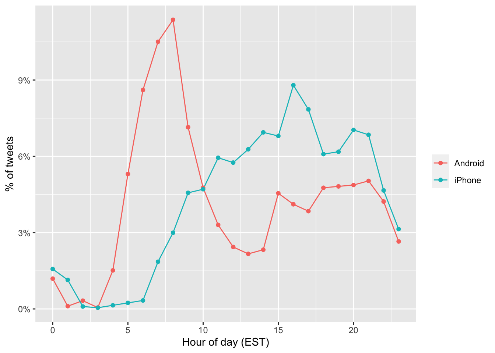
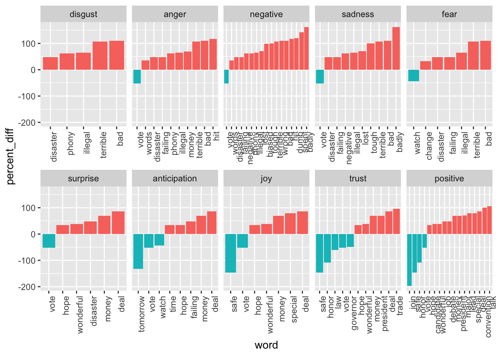

library(tidyverse)
library(lubridate)
library(scales)16 Text mining
16.1 Case study: Trump tweets
During the 2016 US presidential election, then candidate Donald J. Trump used his twitter account as a way to communicate with potential voters. On August 6, 2016, Todd Vaziri tweeted1 about Trump that “Every non-hyperbolic tweet is from iPhone (his staff). Every hyperbolic tweet is from Android (from him).” Data scientist David Robinson conducted an analysis2 to determine if data supported this assertion. Here, we go through David’s analysis to learn some of the basics of text mining. To learn more about text mining in R, we recommend the Text Mining with R book3 by Julia Silge and David Robinson.
We will use the following libraries:
In general, we can extract data directly from Twitter using the rtweet package. However, in this case, a group has already compiled data for us and made it available at http://www.trumptwitterarchive.com. We can get the data from their JSON API using a script like this:
url <- 'http://www.trumptwitterarchive.com/data/realdonaldtrump/%s.json'
trump_tweets <- map(2009:2017, ~sprintf(url, .x)) |>
map_df(jsonlite::fromJSON, simplifyDataFrame = TRUE) |>
filter(!is_retweet & !str_detect(text, '^"')) |>
mutate(created_at = parse_date_time(created_at,
orders = "a b! d! H!:M!:S! z!* Y!",
tz="EST")) For convenience, we include the result of the code above in the dslabs package:
library(dslabs)You can see the data frame with information about the tweets by typing
head(trump_tweets)with the following variables included:
names(trump_tweets)[1] "source" "id_str"
[3] "text" "created_at"
[5] "retweet_count" "in_reply_to_user_id_str"
[7] "favorite_count" "is_retweet" The help file ?trump_tweets provides details on what each variable represents. The tweets are represented by the text variable:
trump_tweets$text[16413] |> str_wrap(width = options()$width) |> cat()Great to be back in Iowa! #TBT with @JerryJrFalwell joining me in Davenport-
this past winter. #MAGA https://t.co/A5IF0QHnicand the source variable tells us which device was used to compose and upload each tweet:
trump_tweets |> count(source) |> arrange(desc(n)) |> head(5) source n
1 Twitter Web Client 10718
2 Twitter for Android 4652
3 Twitter for iPhone 3962
4 TweetDeck 468
5 TwitLonger Beta 288We are interested in what happened during the campaign, so for this analysis we will focus on what was tweeted between the day Trump announced his campaign and election day. We define the following table containing just the tweets from that time period. Note that we use extract to remove the Twitter for part of the source and filter out retweets.
campaign_tweets <- trump_tweets |>
extract(source, "source", "Twitter for (.*)") |>
filter(source %in% c("Android", "iPhone") &
created_at >= ymd("2015-06-17") &
created_at < ymd("2016-11-08")) |>
filter(!is_retweet) |>
arrange(created_at) |>
as_tibble()We can now use data visualization to explore the possibility that two different groups were tweeting from these devices. For each tweet, we will extract the hour, East Coast time (EST), it was tweeted and then compute the proportion of tweets tweeted at each hour for each device:
campaign_tweets |>
mutate(hour = hour(with_tz(created_at, "EST"))) |>
count(source, hour) |>
group_by(source) |>
mutate(percent = n / sum(n)) |>
ungroup() |>
ggplot(aes(hour, percent, color = source)) +
geom_line() +
geom_point() +
scale_y_continuous(labels = percent_format()) +
labs(x = "Hour of day (EST)", y = "% of tweets", color = "")
We notice a big peak for the Android in the early hours of the morning, between 6 and 8 AM. There seems to be a clear difference in these patterns. We will therefore assume that two different entities are using these two devices.
We will now study how the tweets differ when we compare Android to iPhone. To do this, we introduce the tidytext package.
16.2 Text as data
The tidytext package helps us convert free form text into a tidy table. Having the data in this format greatly facilitates data visualization and the use of statistical techniques.
library(tidytext)The main function needed to achieve this is unnest_tokens. A token refers to a unit that we are considering to be a data point. The most common token will be words, but they can also be single characters, ngrams, sentences, lines, or a pattern defined by a regex. The functions will take a vector of strings and extract the tokens so that each one gets a row in the new table. Here is a simple example:
poem <- c("Roses are red,", "Violets are blue,",
"Sugar is sweet,", "And so are you.")
example <- tibble(line = c(1, 2, 3, 4),
text = poem)
example# A tibble: 4 × 2
line text
<dbl> <chr>
1 1 Roses are red,
2 2 Violets are blue,
3 3 Sugar is sweet,
4 4 And so are you. example |> unnest_tokens(word, text)# A tibble: 13 × 2
line word
<dbl> <chr>
1 1 roses
2 1 are
3 1 red
4 2 violets
5 2 are
6 2 blue
7 3 sugar
8 3 is
9 3 sweet
10 4 and
11 4 so
12 4 are
13 4 you Now let’s look at an example from the tweets. We will look at tweet number 3008 because it will later permit us to illustrate a couple of points:
i <- 3008
campaign_tweets$text[i] |> str_wrap(width = 65) |> cat()Great to be back in Iowa! #TBT with @JerryJrFalwell joining me in
Davenport- this past winter. #MAGA https://t.co/A5IF0QHniccampaign_tweets[i,] |>
unnest_tokens(word, text) |>
pull(word) [1] "great" "to" "be" "back"
[5] "in" "iowa" "tbt" "with"
[9] "jerryjrfalwell" "joining" "me" "in"
[13] "davenport" "this" "past" "winter"
[17] "maga" "https" "t.co" "a5if0qhnic" Note that the function tries to convert tokens into words. A minor adjustment is to remove the links to pictures:
links <- "https://t.co/[A-Za-z\\d]+|&"
campaign_tweets[i,] |>
mutate(text = str_replace_all(text, links, "")) |>
unnest_tokens(word, text) |>
pull(word) [1] "great" "to" "be" "back"
[5] "in" "iowa" "tbt" "with"
[9] "jerryjrfalwell" "joining" "me" "in"
[13] "davenport" "this" "past" "winter"
[17] "maga" Now we are now ready to extract the words for all our tweets.
tweet_words <- campaign_tweets |>
mutate(text = str_replace_all(text, links, "")) |>
unnest_tokens(word, text)And we can now answer questions such as “what are the most commonly used words?”:
tweet_words |>
count(word) |>
arrange(desc(n))# A tibble: 6,264 × 2
word n
<chr> <int>
1 the 2330
2 to 1413
3 and 1245
4 in 1190
5 i 1151
6 a 1121
7 you 999
8 of 982
9 is 944
10 on 880
# ℹ 6,254 more rowsIt is not surprising that these are the top words. The top words are not informative. The tidytext package has a database of these commonly used words, referred to as stop words, in text mining:
stop_words# A tibble: 1,149 × 2
word lexicon
<chr> <chr>
1 a SMART
2 a's SMART
3 able SMART
4 about SMART
5 above SMART
6 according SMART
7 accordingly SMART
8 across SMART
9 actually SMART
10 after SMART
# ℹ 1,139 more rowsIf we filter out rows representing stop words with filter(!word %in% stop_words$word):
tweet_words <- campaign_tweets |>
mutate(text = str_replace_all(text, links, "")) |>
unnest_tokens(word, text) |>
filter(!word %in% stop_words$word ) we end up with a much more informative set of top 10 tweeted words:
tweet_words |>
count(word) |>
top_n(10, n) |>
mutate(word = reorder(word, n)) |>
arrange(desc(n))# A tibble: 10 × 2
word n
<fct> <int>
1 trump2016 415
2 hillary 407
3 people 304
4 makeamericagreatagain 298
5 america 255
6 clinton 240
7 poll 220
8 crooked 205
9 trump 204
10 cruz 161Some exploration of the resulting words (not shown here) reveals a couple of unwanted characteristics in our tokens. First, some of our tokens are just numbers (years, for example). We want to remove these and we can find them using the regex ^\d+$. Second, some of our tokens come from a quote and they start with '. We want to remove the ' when it is at the start of a word so we will just str_replace. We add these two lines to the code above to generate our final table:
tweet_words <- campaign_tweets |>
mutate(text = str_replace_all(text, links, "")) |>
unnest_tokens(word, text) |>
filter(!word %in% stop_words$word &
!str_detect(word, "^\\d+$")) |>
mutate(word = str_replace(word, "^'", ""))Now that we have all our words in a table, along with information about what device was used to compose the tweet they came from, we can start exploring which words are more common when comparing Android to iPhone.
For each word, we want to know if it is more likely to come from an Android tweet or an iPhone tweet. We therefore compute, for each word, what proportion of all words it represent for Android and iPhone, respectively.
android_vs_iphone <- tweet_words |>
count(word, source) |>
pivot_wider(names_from = "source", values_from = "n", values_fill = 0) |>
mutate(p_a = Android / sum(Android), p_i = iPhone / sum(iPhone),
percent_diff = (p_a - p_i) / ((p_a + p_i)/2) * 100)For words appearing at least 100 times in total, here are the highest percent differences for Android
android_vs_iphone |> filter(Android + iPhone >= 100) |>
arrange(desc(percent_diff))# A tibble: 30 × 6
word Android iPhone p_a p_i percent_diff
<chr> <int> <int> <dbl> <dbl> <dbl>
1 bad 104 26 0.00645 0.00188 110.
2 crooked 156 49 0.00968 0.00354 92.9
3 cnn 116 37 0.00720 0.00267 91.7
4 ted 86 28 0.00533 0.00202 90.1
5 interviewed 76 25 0.00471 0.00180 89.3
6 media 78 26 0.00484 0.00188 88.2
7 cruz 115 46 0.00713 0.00332 72.9
8 hillary 290 117 0.0180 0.00845 72.2
9 win 74 30 0.00459 0.00217 71.8
10 president 84 35 0.00521 0.00253 69.4
# ℹ 20 more rowsand the top for iPhone:
android_vs_iphone |> filter(Android + iPhone >= 100) |>
arrange(percent_diff)# A tibble: 30 × 6
word Android iPhone p_a p_i percent_diff
<chr> <int> <int> <dbl> <dbl> <dbl>
1 makeamericagreatagain 0 298 0 0.0215 -200
2 join 1 157 0.0000620 0.0113 -198.
3 trump2016 3 412 0.000186 0.0297 -198.
4 tomorrow 24 101 0.00149 0.00729 -132.
5 vote 46 67 0.00285 0.00484 -51.6
6 america 114 141 0.00707 0.0102 -36.0
7 tonight 70 84 0.00434 0.00606 -33.1
8 iowa 62 65 0.00385 0.00469 -19.8
9 poll 117 103 0.00726 0.00744 -2.43
10 trump 112 92 0.00695 0.00664 4.49
# ℹ 20 more rowsWe already see somewhat of a pattern in the types of words that are being tweeted more from one device versus the other. However, we are not interested in specific words but rather in the tone. Vaziri’s assertion is that the Android tweets are more hyperbolic. So how can we check this with data? Hyperbolic is a hard sentiment to extract from words as it relies on interpreting phrases. However, words can be associated to more basic sentiment such as anger, fear, joy, and surprise. In the next section, we demonstrate basic sentiment analysis.
16.3 Sentiment analysis
In sentiment analysis, we assign a word to one or more “sentiments”. Although this approach will miss context-dependent sentiments, such as sarcasm, when performed on large numbers of words, summaries can provide insights.
The first step in sentiment analysis is to assign a sentiment to each word. As we demonstrate, the tidytext package includes several maps or lexicons. We will also be using the textdata package.
library(tidytext)
library(textdata)The bing lexicon divides words into positive and negative sentiments. We can see this using the tidytext function get_sentiments:
get_sentiments("bing")The AFINN lexicon assigns a score between -5 and 5, with -5 the most negative and 5 the most positive. Note that this lexicon needs to be downloaded the first time you call the function get_sentiment:
get_sentiments("afinn")The loughran and nrc lexicons provide several different sentiments. Note that these also have to be downloaded the first time you use them.
get_sentiments("loughran") |> count(sentiment)# A tibble: 6 × 2
sentiment n
<chr> <int>
1 constraining 184
2 litigious 904
3 negative 2355
4 positive 354
5 superfluous 56
6 uncertainty 297get_sentiments("nrc") |> count(sentiment)# A tibble: 10 × 2
sentiment n
<chr> <int>
1 anger 1245
2 anticipation 837
3 disgust 1056
4 fear 1474
5 joy 687
6 negative 3316
7 positive 2308
8 sadness 1187
9 surprise 532
10 trust 1230For our analysis, we are interested in exploring the different sentiments of each tweet so we will use the nrc lexicon:
nrc <- get_sentiments("nrc") |>
select(word, sentiment)We can combine the words and sentiments using inner_join, which will only keep words associated with a sentiment. Here are 10 random words extracted from the tweets:
tweet_words |> inner_join(nrc, by = "word", relationship = "many-to-many") |>
select(source, word, sentiment) |>
sample_n(5)# A tibble: 5 × 3
source word sentiment
<chr> <chr> <chr>
1 Android enjoy joy
2 iPhone terrific sadness
3 iPhone tactics trust
4 Android clue anticipation
5 iPhone change fear Now we are ready to perform a quantitative analysis comparing Android and iPhone by comparing the sentiments of the tweets posted from each device. Here we could perform a tweet-by-tweet analysis, assigning a sentiment to each tweet. However, this will be challenging since each tweet will have several sentiments attached to it, one for each word appearing in the lexicon. For illustrative purposes, we will perform a much simpler analysis: we will count and compare the frequencies of each sentiment appearing in each device.
sentiment_counts <- tweet_words |>
left_join(nrc, by = "word", relationship = "many-to-many") |>
count(source, sentiment) |>
pivot_wider(names_from = "source", values_from = "n") |>
mutate(sentiment = replace_na(sentiment, replace = "none"))
sentiment_counts# A tibble: 11 × 3
sentiment Android iPhone
<chr> <int> <int>
1 anger 962 527
2 anticipation 917 707
3 disgust 639 314
4 fear 799 486
5 joy 695 536
6 negative 1657 931
7 positive 1827 1494
8 sadness 901 514
9 surprise 530 365
10 trust 1248 1001
11 none 11834 10793For each sentiment, we can compute the percent difference in proportion for Android compared to iPhone:
sentiment_counts |>
mutate(p_a = Android / sum(Android) ,
p_i = iPhone / sum(iPhone),
percent_diff = (p_a - p_i) / ((p_a + p_i)/2) * 100) |>
arrange(desc(percent_diff))# A tibble: 11 × 6
sentiment Android iPhone p_a p_i percent_diff
<chr> <int> <int> <dbl> <dbl> <dbl>
1 disgust 639 314 0.0290 0.0178 48.1
2 anger 962 527 0.0437 0.0298 37.8
3 negative 1657 931 0.0753 0.0527 35.3
4 sadness 901 514 0.0409 0.0291 33.8
5 fear 799 486 0.0363 0.0275 27.6
6 surprise 530 365 0.0241 0.0207 15.3
7 anticipation 917 707 0.0417 0.0400 4.04
8 joy 695 536 0.0316 0.0303 4.01
9 trust 1248 1001 0.0567 0.0567 0.0846
10 positive 1827 1494 0.0830 0.0846 -1.85
11 none 11834 10793 0.538 0.611 -12.7 So we do see some differences and the order is interesting: the largest three sentiments are disgust, anger, and negative!
If we are interested in exploring which specific words are driving these differences, we can refer back to our android_iphone_or object:
android_vs_iphone |> inner_join(nrc, by = "word") |>
filter(sentiment == "disgust") |>
arrange(desc(percent_diff))# A tibble: 157 × 7
word Android iPhone p_a p_i percent_diff sentiment
<chr> <int> <int> <dbl> <dbl> <dbl> <chr>
1 abuse 1 0 0.0000620 0 200 disgust
2 angry 10 0 0.000620 0 200 disgust
3 arrogant 2 0 0.000124 0 200 disgust
4 attacking 5 0 0.000310 0 200 disgust
5 belittle 2 0 0.000124 0 200 disgust
6 blame 1 0 0.0000620 0 200 disgust
7 bleeding 1 0 0.0000620 0 200 disgust
8 bombed 5 0 0.000310 0 200 disgust
9 clumsy 1 0 0.0000620 0 200 disgust
10 crushed 1 0 0.0000620 0 200 disgust
# ℹ 147 more rowsand we can make a graph:

This is just a simple example of the many analyses one can perform with tidytext. To learn more, we again recommend the Tidy Text Mining book4.
16.4 Exercises (will not be included in midterm)
Project Gutenberg is a digital archive of public domain books. The R package gutenbergr facilitates the importation of these texts into R.
You can install and load by typing:
install.packages("gutenbergr")
library(gutenbergr)You can see the books that are available like this:
gutenberg_metadataUse
str_detectto find the ID of the novel Pride and Prejudice.We notice that there are several versions. The
gutenberg_works()function filters this table to remove replicates and include only English language works. Read the help file and use this function to find the ID for Pride and Prejudice.
- Use the
gutenberg_downloadfunction to download the text for Pride and Prejudice. Save it to an object calledbook.
Use the tidytext package to create a tidy table with all the words in the text. Save the table in an object called
wordsWe will later make a plot of sentiment versus location in the book. For this, it will be useful to add a column with the word number to the table.
Remove the stop words and numbers from the
wordsobject. Hint: use theanti_join.Now use the
AFINNlexicon to assign a sentiment value to each word.Make a plot of sentiment score versus location in the book and add a smoother.
Assume there are 300 words per page. Convert the locations to pages and then compute the average sentiment in each page. Plot that average score by page. Add a smoother that appears to go through data.